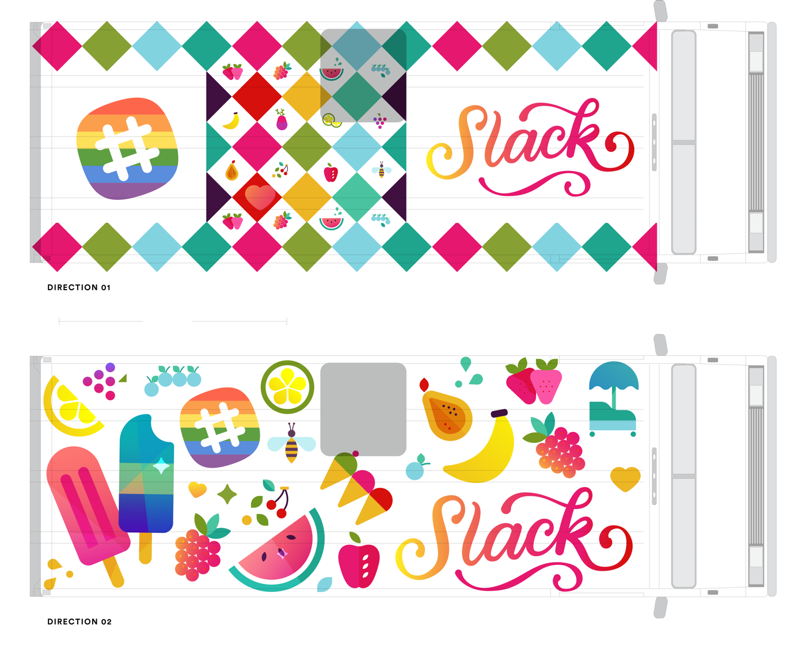
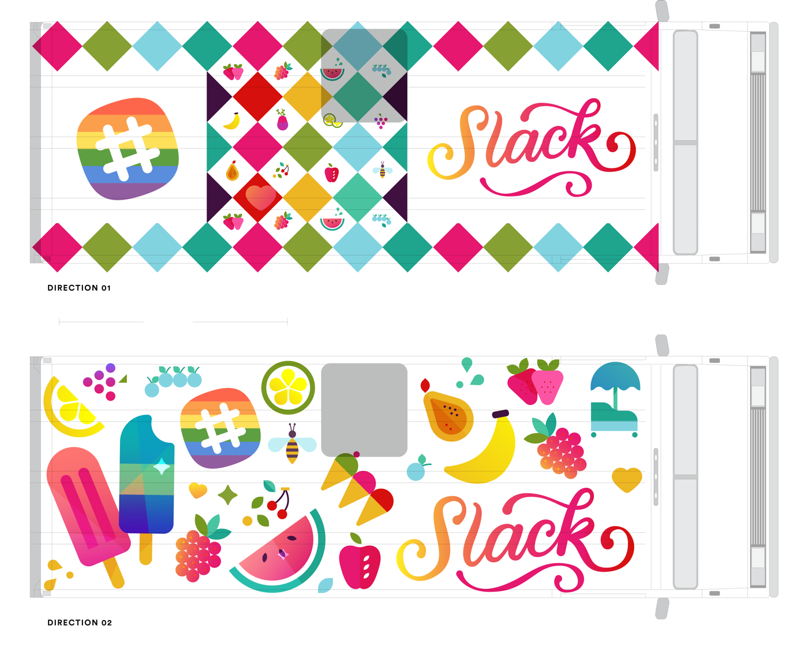

The making of an ice cream truck!
A mentor of mine once told me that the best place for visual inspiration is beyond the computer: in the real, analog world. It's indeed a joy when your personal interests and obsessions (ie. semi-obscure Japanese architectural movements) contribute to your design process. Here's a look at a couple of projects with Slack that did just that!


Aenean eu leo quam. Pellentesque ornare sem lacinia quam venenatis vestibulum. Vestibulum id ligula porta felis euismod semper.

 



Special thanks to Slack designers Terra Spitzner, Brandon Velestuk & Matt Kump for the collaboration and being open to some of my kookier ideas! Also thank you to the Slack front-end team for animating the cityscapes so perfectly.
I'll be posting an illustration process post once a week for the next couple of months! Follow along here.